CDC, Construction Development Company, Doha
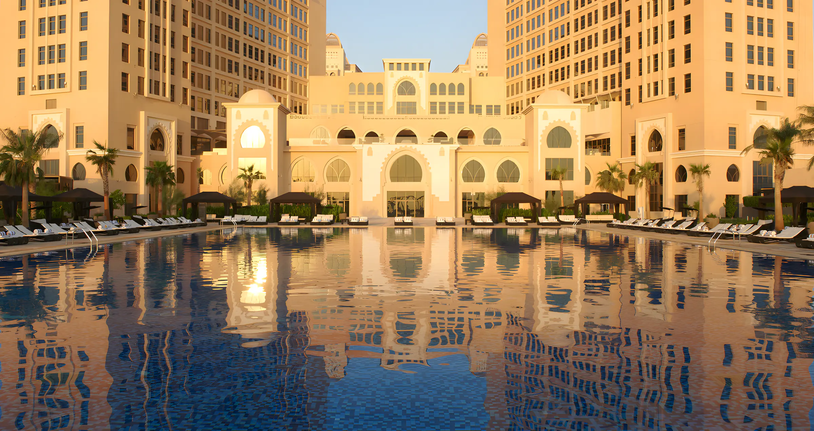
#295 · West Bay, Doha · CompletedThe St. Regis Doha.A 336-key hotel and three residential towers on one raft foundation, 500 by 154 metres.
We build hotels, towers, villas and public buildings in Qatar, from the first pile to the handover.
CDC started in 1982. Engineering, procurement, construction and operation sit under one roof, with our own plant and machinery department and over 5,000 people. We were the first company in Qatar to meet ISO 9001.
Head office
Level 27, Al Fardan Office TowersWest Bay, Doha
Main office
Building 29, Al Rawabi Street 840Zone 24, Al-Muntazah, Doha
Post
P.O. Box 8388, Doha, QatarSelected work
Five of the 37 projects on our register. Every photo here is a building CDC built.
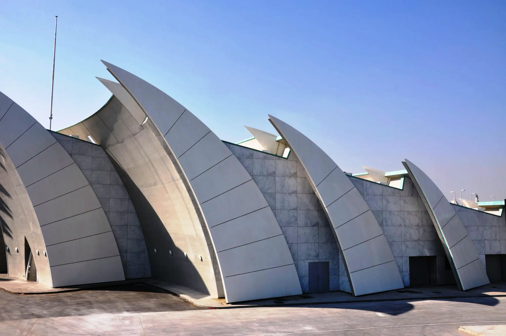


Project register
Numbered the way we file them, newest first. Open a row for the scope, the client and the engineer.
#391Al Mouj MuscatAl Mouj, Muscat, OmanCommercialOMR 84.7mUnder construction
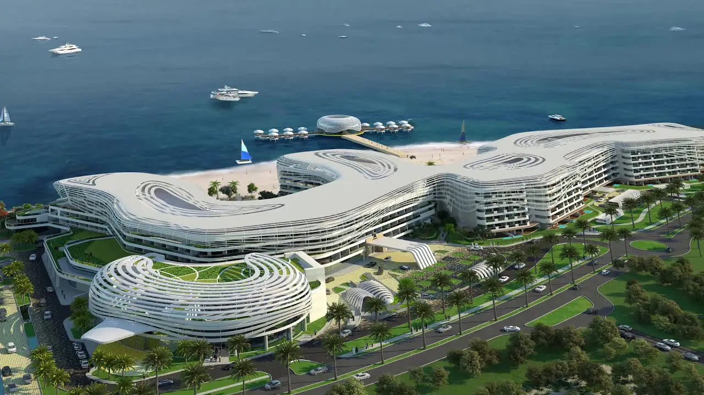
5-star beach hotel and branded residences on one shared basement. 121,108 m² built-up area on a 46,835 m² plot.
- Client
- Al Fardan Hotels & Resorts LLC
- Engineer
- Ibrahim Jaidah Architects & Engineers
#382Hotel Apartments & Residences, Marsa ArabiaPorto Arabia, The Pearl QatarCommercialQR 1.5bnUnder construction

A 5-star hotel and residences on its own island, reached by a bridge from Porto Arabia. 157,000 m² built-up.
- Client
- Marsa Arabia Resort
- Engineer
- Dar Al-Handasah
#377Commercial Development at LusailMarina (COM-13), LusailCommercialQR 700mCompleted

A 130.80 m tower in glass and aluminium curtain wall: three basements, five podium floors, 23 upper floors.
- Client
- Alfardan Properties Co.
- Engineer
- Arab Engineering Bureau
#373Aspire Academy ExpansionAspire Zone, DohaCommercialQR 650mCompleted
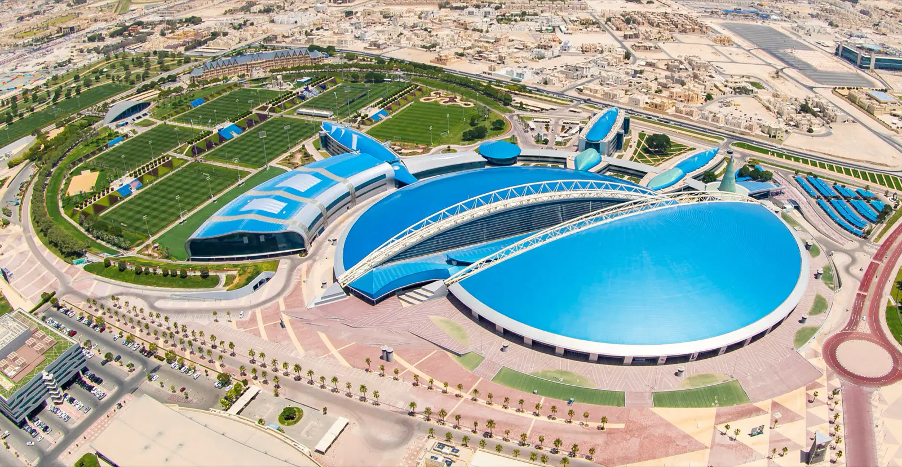
Demolition, alterations and three new buildings, with the electromechanical and landscaping works.
- Client
- Aspire Zone Foundation
- Engineer
- KEO International Consultants
#352Marsa Malaz HotelThe Pearl QatarCommercialQR 1.1bnCompleted
A 280-key hotel on its own island: three restaurants, a beach bar and 523 parking spaces. 81,280 m² built-up.
- Client
- Alfardan Properties Co.
- Engineer
- Arab Engineering Bureau
#351Private PalaceThe Pearl QatarResidential—Completed

8,579 m² of palace, service buildings and guard houses, with electromechanical and landscaping works.
- Client
- Perlier Investment Company
- Engineer
- Arab Engineering Bureau
#347Qatar Foundation Offsite WarehouseSalwa Industrial Area, DohaCommercialQR 340mCompleted

Design, build and commissioning of a warehouse and distribution centre, incl. an automated medical warehouse for Sidra.
- Client
- Qatar Foundation
- Engineer
- ASTAD
#297Tower 31The Pearl QatarResidentialQR 230mCompleted
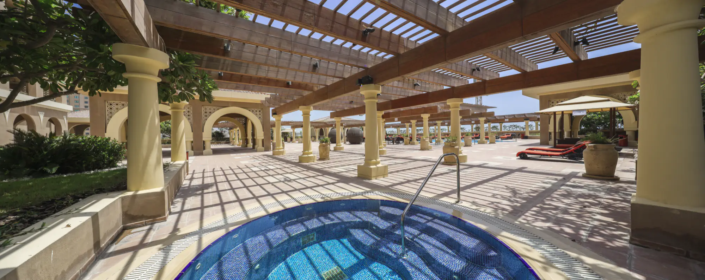
A 101.20 m residential tower with 174 apartments and 4 penthouses, built for CDC's own account.
- Client
- Construction Development Company
- Engineer
- KEO International Consultants
#296Kempinski Residences & SuitesWest Bay, DohaResidentialQR 575mCompleted
A 252.10 m concrete-framed tower on a 7,193 m² plot in West Bay.
- Client
- Al Fardan Real Estate Co.
- Engineer
- Arab Engineering Bureau
#295The St. Regis DohaWest Bay, DohaCommercial · ResidentialQR 2.5bnCompleted

A 336-key hotel and three residential towers on one 500 × 154 m raft foundation. 422 apartments and a 1,200-seat ballroom.
- Client
- Resorts Development Company
- Engineer
- Dar Al Handasah & Wilson Associates
#292Al Qassar Office TowerWest Bay, DohaCommercialQR 170mCompleted
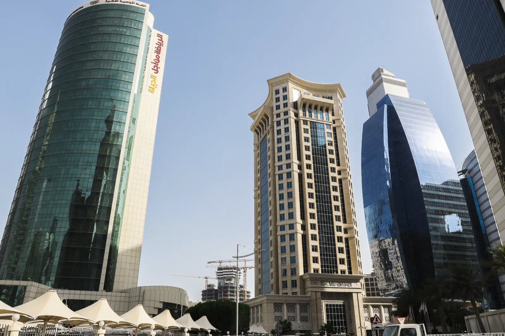
A 110 m office tower in GRC panels, precast and glazed curtain wall.
- Client
- Al Fardan Real Estate Co.
- Engineer
- Arab Engineering Bureau
#291Two Porto ArabiaPorto Arabia, The Pearl QatarResidentialQR 255mCompleted
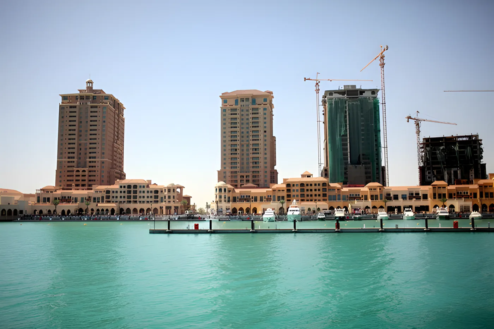
A 101.20 m residential tower: 158 apartments and 4 penthouses over a four-floor podium.
- Client
- Al Fardan Real Estate Co.
- Engineer
- KEO International Consultants
#288New Doha International Airport, Emiri TerminalDohaGovernmentalQR 3.1bnCompleted
With Takenaka (JV): the Emiri and VVIP terminal, 50,000 m² of parking, and a 47 m circular mosque with its minaret.
- Client
- NDIA Steering Committee
- Engineer
- Overseas Bechtel Inc.
#287One Porto ArabiaPorto Arabia, The Pearl QatarResidentialQR 306mCompleted

A 101.20 m tower with 174 apartments, 4 penthouses and townhouses at its foot.
- Client
- Al Fardan Real Estate Co.
- Engineer
- KEO International Consultants
#282Al Dana Garden IIIAbu HammourResidentialQR 47mCompleted

51 villas with a clubhouse, gym, pool and an elevated tennis court.
- Client
- Danat Qatar
- Engineer
- Arab Engineering Bureau
#281Private VillaWest Bay, DohaResidential—Completed
A villa with swimming pool and ancillary buildings, and all the external works and services.
- Client
- Fahad Al Fardan
- Engineer
- Arab Engineering Bureau
#271Commercial Bank PlazaWest Bay, DohaCommercialQR 125mCompleted
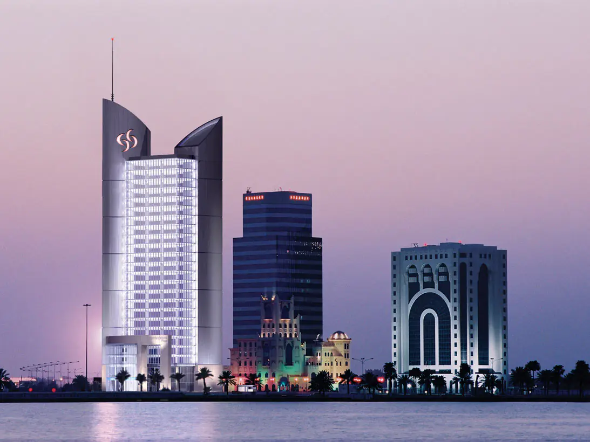
A 128 m office tower with a steel navigation mast reaching 155.50 m, over a six-storey marble-clad bank branch.
- Client
- Commercial Bank of Qatar
- Engineer
- Arab Engineering Bureau
#270Al Dana Garden IIAbu SidraResidentialQR 119mCompleted

142 villas with a clubhouse, restaurant, gym and its own R.O. water plant.
- Client
- Al Fardan Real Estate Co.
- Engineer
- Arab Engineering Bureau
#268Villa and MajlisWadi El Sail, DohaResidentialQR 54mCompleted

A two-storey villa, two majlis, offices, staff quarters, indoor and outdoor pools, built, furnished and equipped.
- Client
- Sheikh Saud Bin Mohammed Al Thani
- Engineer
- Dar Al Handasah
#267Al Fardan TowersWest Bay, DohaCommercial · ResidentialQR 460mCompleted

EPC for two towers: a 30-floor office tower and a 40-floor apartment tower, joined at ground level.
- Client
- Al Fardan Real Estate Co.
- Engineer
- Arab Engineering Bureau
#266West Palm BeachWest Bay Lagoon, DohaResidentialQR 22.2mCompleted

23 private villas on the West Bay lagoon, with roads, walls, drainage, lighting and gardens.
- Client
- Construction Development Company
- Engineer
- Arab Engineering Bureau
#247West Bay ComplexWest Bay, DohaCommercial · ResidentialQR 625mCompleted

A 5.54-hectare master plan around the Four Seasons Hotel: 18 floors, 200 keys, ballrooms and courtyards.
- Client
- HE Sheikh Hamad Bin Jassim Bin Jaber Al Thani
- Engineer
- Halcrow Consultants
#246West Bay Lagoon, Package H1-H2West Bay, DohaGovernmentalQR 58.5mCompleted

Landscaping of the lagoon: block paving, crescent garden paths, gazebos and shade structures.
- Client
- Ministry of Municipal Affairs and Agriculture
- Engineer
- Dar Al Handasah
#24318 Villas Residential CompoundWest Bay, DohaResidentialQR 22mCompleted
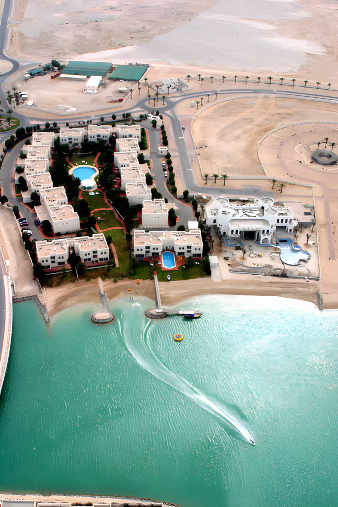
18 villas around a pool and two wooden pavilions, with covered garages and the plant buildings.
- Client
- Al Fardan Real Estate Co.
- Engineer
- Arab Engineering Bureau
#237Marriott Gulf Hotel, RefurbishmentDohaCommercialQR 43.75mCompleted

Floors 1 to 11 of the 1972 Gulf Hotel tower restored, refitted and given new facades.
- Client
- Qatar National Hotels Co.
- Engineer
- Planning International
#22520-Storey Office BuildingWest Bay, DohaGovernmentalQR 52.84mCompleted

A concrete-framed office tower with precast floor slabs and curtain walling.
- Client
- Ministry of Interior
- Engineer
- Arab Engineering Bureau
#221West Bay Complex, Package 1AWest Bay, DohaCommercialQR 17mCompleted
EPC: site development, dredging and a breakwater.
- Client
- HE Sheikh Hamad Bin Jassim Bin Jaber Al Thani
- Engineer
- Arab Engineering Bureau
#220Al Fardan PlazaAl Sadd Street, DohaCommercialQR 23.66mCompleted

EPC: about 9,000 m² of car showroom and offices over a basement.
- Client
- Al Fardan Real Estate Co.
- Engineer
- Arab Engineering Bureau
#214New Doha International Airport, Package FDohaIndustrialQR 15.2mCompleted
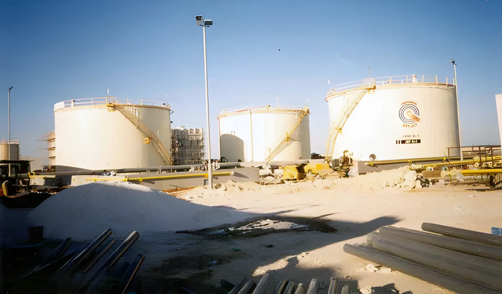
With Motherwell Bridge (JV): the fuel tank farm, four storage tanks and the hydrant system.
- Client
- Ministry of Municipal Affairs
- Engineer
- ASCO Consultants
#211New Doha International Airport, Package BDohaGovernmentalQR 77.25mCompleted

Turnkey: the control tower, fire stations, maintenance workshops and hard standing.
- Client
- Ministry of Municipal Affairs
- Engineer
- Dar Al Handasah
#209Ras Gas Administration ComplexRas LaffanIndustrialQR 43mCompleted

EPC: the main administration building, medical centre, mosque, gate and training centre.
- Client
- Ras Gas
- Engineer
- ASCO Consultants
#198Al Sadd Commercial ComplexDohaCommercialQR 20mCompleted

EPC: a three-storey building of offices and shops.
- Client
- HE Sheikh Hamad Bin Jassim Bin Jaber Al Thani
- Engineer
- Arab Engineering Bureau
#193BMW Showroom and Office BuildingDohaCommercialQR 15mCompleted

EPC: showrooms for BMW, Volvo and Honda, with offices.
- Client
- Al Fardan Automobiles
- Engineer
- Arab Engineering Bureau
#191QIMCO HeadquartersDoha CornicheGovernmentalQR 12mCompleted

A five-storey headquarters in special blue glass, one of the first in Qatar with this facade.
- Client
- QIMCO
- Engineer
- ASCO Consultants
#185Jasmine ComplexDohaResidentialQR 51mCompleted

EPC: 47 two-storey villas with shared facilities, roads and parking.
- Client
- Al Fardan Real Estate Co.
- Engineer
- Special Projects Office
#178Al Bustan ComplexDohaResidentialQR 110mCompleted
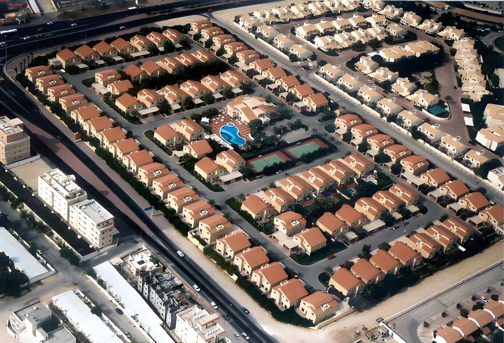
EPC: 83 two-storey villas with shared facilities, roads and parking.
- Client
- Al Fardan Real Estate Co.
- Engineer
- Bin Ghanem Consultants
#162Al Fardan CentreGrand Hamad Road, DohaCommercialQR 60mCompleted
EPC: the well-known Doha shopping centre, a basement and seven storeys of shops and offices.
- Client
- Al Fardan Real Estate Co.
- Engineer
- Arab Engineering Bureau
The year CDC started, out of a pioneering passion for construction.
People at CDC designing, financing, building and operating projects.
Man-hours without a lost-time incident on the New Port Project, CDC and Boom Construction JV, December 2016.
Turnkey thinking
Our work covers every link in a project: four modules that sit close together, so the client, the architect and the engineer work with us from the first drawings.
- 01Engineering
Civil, construction, manufacturing, oil & gas, infrastructure and telecoms.
- 02Procurement
Worldwide sourcing, the right material on site at the right time, suppliers rated on our own system.
- 03Construction & development
Land development, high-rise towers, townhouses, luxury villas and airport buildings.
- 04Operation
Facility management and insurance once the building is handed over.
Our own cranes, pumps and trucks
The Plant & Machinery department keeps every CDC site supplied, services the fleet in its own workshop and certifies our crane operators and riggers. Plant & machinery →
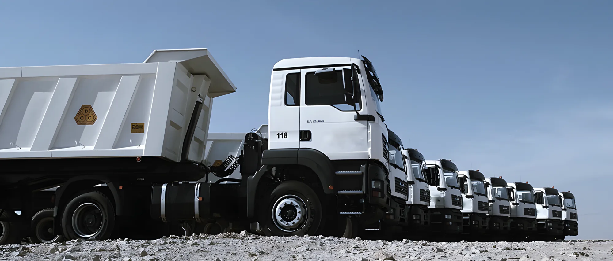
- Tower cranes
- Derrick cranes
- Mobile cranes
- Placing booms
- Stationary concrete pumps
- Dry-mix shotcrete pumps
- Passenger hoists
- Telehandlers
- Excavators
- Graders
- Wheel loaders
- Pile breakers
- Roller compactors
- Generators
- Dump trucks
- Buses, 15 to 65 seats
Clients on our register
Standards and safety
Systems we work to
- ISO 9001Quality management. CDC was the first in Qatar to meet it.
- ISO 14001Environmental management.
- OHSAS 18001Occupational health and safety.
- QGBCFounding member of the Qatar Green Building Council.
Safety record
- 2014QChem Contractors Safety Award.
- Apr, Jul 2016Safety Culture Award, CDC and Boom JV.
- Jul 20166 million man-hours without a lost-time incident, New Port Project.
- Dec 201610 million man-hours without a lost-time incident.